Nixons Wedding Car Hire: Testimonials

Here are just a some of the many thank you letters that have been sent to Nixon's. We do thank everyone who has taken the time to write - it is appreciated!
| 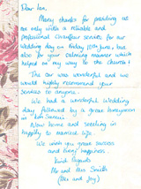 |
Dear Ian Many Thanks for providing us with not only with a reliable and professional chauffeur service for our wedding day on Friday 10th June, but also for your calming manner which helped on my way to the Church! The car was wonderful and we would highly recommend your services to anyone... we wish you great success and every happiness. Kind regards Mr and Mrs Smith (Alex and Joy) |
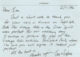 |
Dear Ian Just a short note to thank you for your cars and drivers on the Sept 4th. Both the Vintage Rolls and the Silver Spirit were perfect for our wedding day. I enclose a picture for you of the Vintage Rolls outside Braxted Park where I'm sure you agree it looked perfect. All the best and thanks again. Jon and Sophie |
| 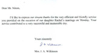 |
Dear Mr. Nixon I'd like to express our sincere thanks for the very efficient and friendly service you provided on the occasion of our daughter Rachel's marriage on Monday. Your service contributed to a very successful and memorable day. Yours sincerely Mrs Wilkinson |
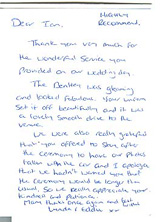 |
Dear Ian, Highly Recommend Thank you very much for the wonderful service you provided on our wedding day. The Bentley was gleaming and looked fabulous. Your uniform set it off beautifully and it was a lovely smooth drive to the venue.......so we really appreciated your kindness and patience. Many thanks again and best wishes Lynda & Eddie |
| 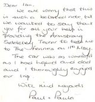 |
Dear Ian ..... thank you for providing the Armstrong Siddeley Tourer to take me to Fennes... The car was wonderful and I thoroughly enjoyed our trip. With kind regards Paul and Paula |
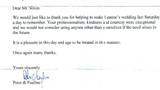 |
Dear Mr Nixon We would just like to thank you for helping to make Leanne's wedding last Saturday a day to remember. Your professionalism, kindness and courtesy were exceptional and we would not consider using anyone other than yourselves if the need arises in the future. It is a pleasure in this day and age to be treated in this manner. Once again many thanks. Yours sincerely Peter and Pauline |
 |
To Ian Nixon .... thank you for the usage of the wonderful vintage Rolls Royce for our wedding.. Sorry the final departing ceremony was delayed. Thank you for staying so late.... Sonia |
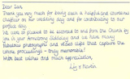 |
Dear Ian, Thank you very much for being such a helpful and courteous chauffeur on our wedding day and for contributing to our perfect day. We were so pleased to be escorted to and from the church by you in your Armstrong Siddeley ... With best wishes and much appreciation Liz and Martin |
| 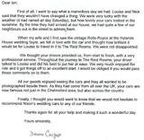 |
.... When my wife and I first saw the vintage Rolls Royce at Hylands wedding fayre we fell in love with the car and thought how brilliant it would be for Louise to travel to the Reid Rooms. We were not disappointed.
We thought the drivers provided us, from start to finish, with a very professional service.... Finally, I thought you would want to know that we would not hesitate to recommend Nixon's wedding cars to any of our friends.... Dennis Crozier |
 |
Just a quick note to thank you for making our wedding day special. The classic Bentley was a fantastic ride and very comfy. Thanks again Hannah + Andy |
| 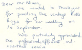 |
Dear Mr Nixon We wanted to thank you for providing the vintage Rolls Royce for our wedding on 16 September. We partially appreciated the professional, efficient and courteous service Valerie and David |
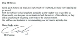 |
Dear Mr Nixon Just a quick note to say thank you very much for your help, to make our wedding day go so well. Both the vehicles looked excellent, especially as the weather was so good to us. Please could you also pass on our thanks to the drivers of the vehicles, as they did an excellent job getting everybody to the church on time. We will have no hesitation in recommending your services to anybody else. Many thanks again. Mr Cushing |
| 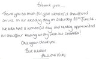 |
Thank you so much for your wonderful chauffeured service on our wedding day on Saturday 26th June 04. We both had a wonderful day and really appreciated our chauffeur keeping us dry with his umbrella! Once again thank you. Best wishes Phill and Vicky |
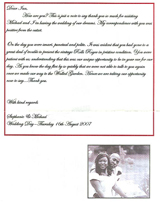 |
...my correspondence with you was positive from the outset. On the day you were smart, punctual and polite. It was evident that you had gone to a great deal of trouble to present the vintage Rolls Royce in pristine condition.... With kind regards Stephanie and Michael |
| 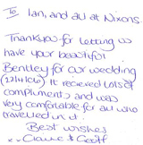 |
To Ian, and all at Nixons Thank you for letting us have your beautiful Bentley for our wedding. It received lots of compliments and easy very comfortable for all who travelled in it. Best wishes Claire and Geoff |
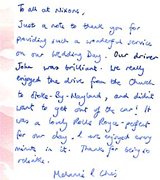 |
To all at Nixons, Just a note to thank you for providing such a wonderful service on our wedding day. Our driver John was brilliant. .... ...It was a lovely Rolls Royce - perfect for our day. I enjoyed every minute in it. Thanks for being so reliable. Melanie and Chris |
| 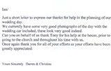 |
Ian Just a short letter to express our thanks for help in the planning of our wedding day. We currently have some very good photographs of the day with the wedding car included, these look very good indeed. Can you on behalf of us thank Tony for his help at the house, prior to going to the Church and throughout his time with us. Once again thank you for all of your efforts as your efforts have been greatly appreciated. Yours sincerely Darren and Christine |
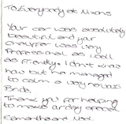 |
To Everybody at Nixons Your car was absolutely beautiful and your chauffer was very professional as well as friendly. I don't know how but he managed to calm a very nervous bride. Thank you for helping to make our day very special. Samantha and Noel |
| 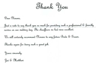 |
Dear Nixons Just a note to say thank you so much for providing such a professional and friendly service on our wedding day. The chauffeurs we had were excellent. We will certainly recommend Nixons to any future Bride and Groom. Thanks again for doing such a great job. Yours sincerely. Joe and Mathew |
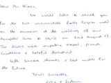 |
We would like to thank you for the two immaculate rolls Royce used on the occasion of the wedding of our daughter ... The drivers were superbly dressed , prompt, courteous and helpful throughout. With sincere thanks and best wishes for the future. Yours sincerely. John and Barbara |
| 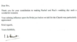 |
Dear Sirs, Thank you for your contribution to making Rachel and Paul's wedding such a wonderful occasion. Your calming influence upon the bride just before we left for the Church was particularly appreciated. Kind regards, I Hewitt |
 |
Dear Ian Thank you for being such a star at our wedding : putting up with my girly ways - getting you to arrive early and then being late myself! And lending me your phone - a bit beyond the call of duty but it really rescued the day... I would recommend you at the drop of a hat - good old - fashioned service : efficient and with a smile! Please pass on our thanks to your colleague who drove the Bentley... With very best wishes and thanks, Karin and Rupert |
| 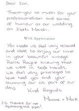 |
Dear Ian Thank you so much for your professionalism and sense of humour at our wedding on 24th March. You made us feel very relaxed and able to enjoy our time in your beautiful vintage Rolls Royce knowing that we were in safe hands. We feel privileged to have had you and your stunning car as part of our day. Kind regards Maxine + Mark P.S. thanks for not squashing the piper! |
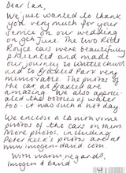 |
Dear Ian, We just wanted to thank you very much for your service on our wedding on the 9th June. The two Rolls Royce cars were beautifully presented and made our journey to Writtle Church and Braxted Park very memorable... ...with warm regards, Imogen and David |
| 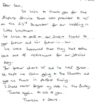 |
Dear Ian, We wish to thank you for the superb service that was provided to us on the 23rd December for our wedding in Little Waltham... ... your father drove us and he was great. He kept me calm going to the Church and got me there in perfect timing. I Shall never forget my ride in the Bentley . Thanks again to all of you. Theresa + Steve |
 |
Thank you for picking us in your gold Rolls Royce on May 31st, for the ride through the villages and for getting us to the Church on time. It was a luxury we will never forget. Yours gratefully, Josephine and Sam |
| 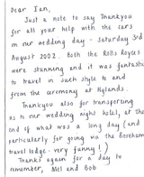 |
Dear Ian Just a note to say thank you for all your help with the cars on our wedding day - Saturday 3rd august 2002. Both the Rolls Royces were stunning and it was fantastic to travel in such style to and from the ceremony at Hylands... ...Thanks again for a day to remember, Mel and Bob |
 |
Thank you for getting me to the Church on time and putting up with all my nerves on the day. The cars looked absolutely stunning, a lot of work had obviously been put into polishing them. I will recommend you to all my friends... Thank you love Amanda |
| 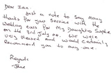 |
Dear Ian Just a note to say many thanks for your service with the wedding cars for my daughter Sophie on the 3rd July 04. We were very pleased and would certainly recommend you to anyone. Regards Jane |
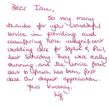 |
Dear Ian So very many thanks for the wonderful service in providing and chauffeuring those magnificent wedding cars for Sophie and Phil, last Saturday. They were really shinning and the service from start to finish has been first class. Our deepest appreciation. Yours sincerely, Liz |